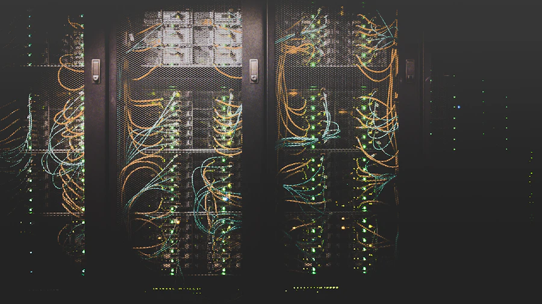
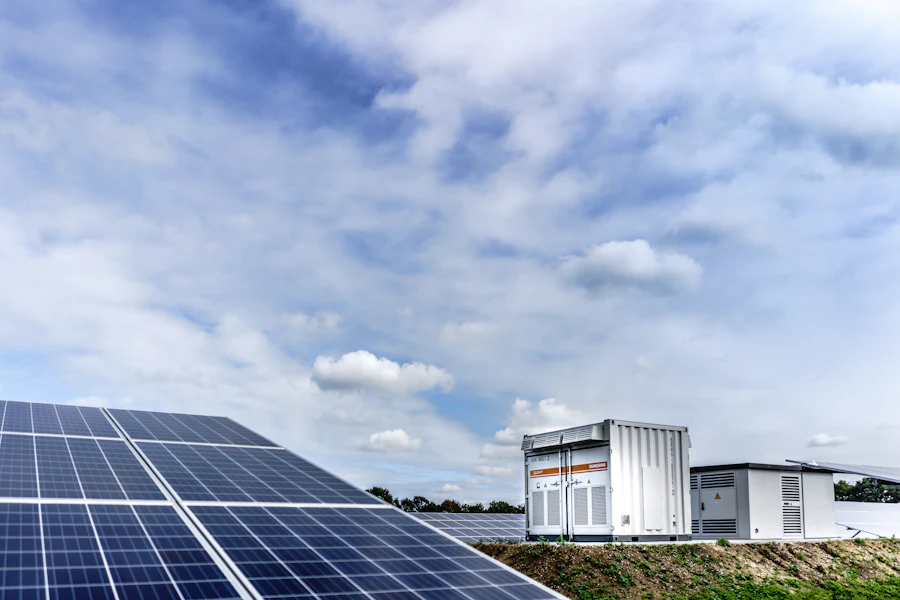
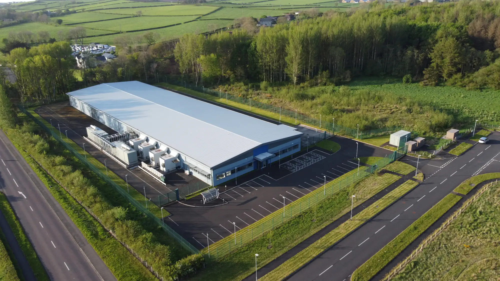
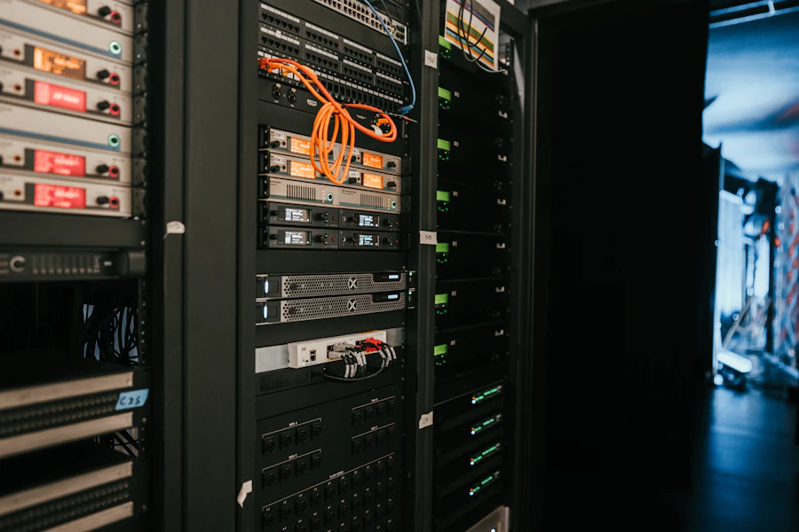
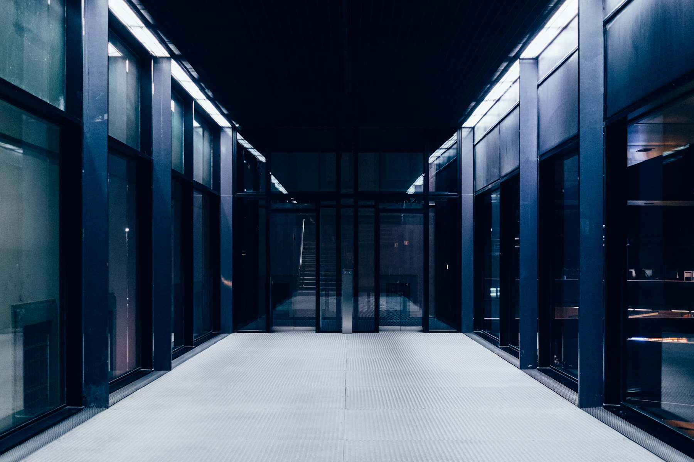

Powering Australia's
AI infrastructure
Integrated data centre campuses that bring compute, cooling and grid-scale energy storage together as a single system.
Talk to our team
Integrated data centre campuses that bring compute, cooling and grid-scale energy storage together as a single system.
Talk to our team
Flexible, software-defined, energy-aware facilities designed for mixed rack densities.
Explore architecture
270 MW / 1080 MWh LFP systems aligned to Victoria's grid constraints and renewable targets.
Explore energy storage
Closed-loop cooling and recycled water, targeting a WUE of 0.06 litres per kilowatt-hour.
Explore sustainability
Colocation and high-density AI racks for workloads that are still growing.
Enquire about capacityIn partnership with customers, utilities, communities and government, we deliver data centre infrastructure that carries Australia's AI workloads without draining its water.
One operating system for the whole facility.
Data centre design is shifting away from static, hardware-centric buildings toward flexible, software-defined, energy-aware infrastructure. PRDC follows that shift — power, cooling, network, compute, storage, security and observability designed together rather than bolted together.
The result is a campus that carries mixed rack densities, absorbs new accelerator hardware as it arrives, and stays resilient when something upstream fails.
Power, cooling, compute and storage are designed as a single system, with telemetry visible to facilities and IT teams alike.
Repeatable modules bring capacity online quickly, while keeping enough flexibility for new accelerator and cooling requirements.
Closed-loop cooling, free-air operation and recycled supply keep fresh water consumption close to zero during normal operation.

We design for mixed densities rather than assuming a uniform rack profile — standard colocation alongside high-density AI and accelerated compute, with liquid cooling where the workload calls for it.
Two shot glasses of water per kilowatt-hour.
Our target WUE is 30 times more efficient than the industry average. Closed-loop cooling recycles the same water continuously instead of drawing a constant fresh supply.
By 2030, AI data centres worldwide could consume enough water each year to match the drinking needs of roughly 1.3 billion people.
Environmental responsibility is not an add-on at PRDC. It is a basic design feature of the facility.
PRDC design charterConnect with our team to discuss capacity, power and cooling for your next deployment.
Contact us